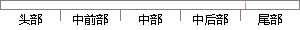

0 包对保留交叉验证的训练集（70%）中的数据进行建模。
片段位置图

相似结果|
相似片段 1：两个子集，一个为训练子集，通常占样本数量的70％，剩下的30％为保留交叉验证子集，在训练子集上进行模型训练，在交叉验证子集上进行测试，选择在交叉验证子集上最小误差的参数作为最优参数。在实际应用中训练
相似片段 2：的分类识别，通过训练建模可以对测试数据进行预测。在训练建模之前，将训练集的一部分数据予以保留，利用剩下的数据进行模型训练，然后用保留数据对模型进行验证，经过多次操作来选择最优的识别率对应的参数组，这种
相似片段 3：CMSVM学习系统的基本情况介绍和系统各部分功能的使用方法，便于学习操作。3．2．2．2CMSVM中交叉验证l与预报应用使用说明本课题是针对小样本的数据进行训练建模并分类预测的，因此我们选择了“交叉验证l
相似片段 4：所有数据的 70%，而验证数据占整个数据的 30%。为了减低随机性对结果的影响，采用不同的数据进行多轮交叉验证，最终的结果来自于多轮交叉的汇总。以 K 折交叉验证为例，将初始数据集分成 K 份，保留其中
相似片段 5：。常用的交叉验证的方法有Holdout验证、留一验证和K折验证。K折交叉验证是将初始样本集分割成K个子样本，保留其中一个单独的子样本作为验证模型的样本数据，其他K．1个样本用来训练。进行K次重复交叉
|
※ 片段修改建议 ※
近似词参考：- 保留：保存
- 交叉：交织
- 训练：练习
- 进行：举行
系统自动生成语句：0 包对保存交织验证的练习集（70%）中的数据举行建模。
注：本片段修改建议为系统自动生成，仅供参考。